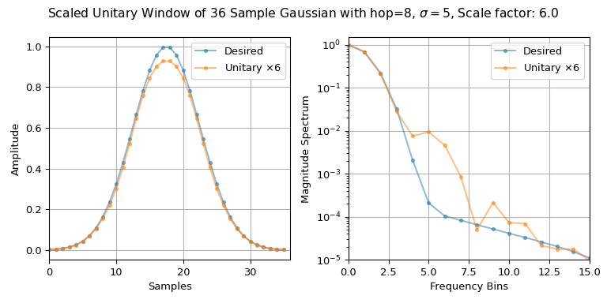

from_win_equals_dual#
- classmethod ShortTimeFFT.from_win_equals_dual(desired_win, hop, fs, *, fft_mode='onesided', mfft=None, scale_to=None, phase_shift=0)[source]#
Create instance where the window and its dual are equal up to a scaling factor.
An instance is created were window and dual window are equal as well as being closest to the parameter desired_win in the least-squares sense, i.e., minimizing
abs(win-desired_win)**2. Hence,winhas the same length as desired_win. Then a scaling factor is applied according to thescale_toparameter.All other parameters have the identical meaning as in the initializer.
To be able to calculate a valid window, desired_win needs to have a valid dual STFT window for the given
hopinterval. If this is not the case, aValueErroris raised.- Parameters:
- desired_winnp.ndarray
A real-valued or complex-valued 1d array containing the sample of the desired window.
- hopint
The increment in samples, by which the window is shifted in each step.
- fsfloat
Sampling frequency of input signal and window. Its relation to the sampling interval
TisT = 1 / fs.- fft_mode‘twosided’, ‘centered’, ‘onesided’, ‘onesided2X’
Mode of FFT to be used (default ‘onesided’). See property
fft_modefor details.- mfftint | None
Length of the FFT used, if a zero padded FFT is desired. If
None(default), the length of the windowwinis used.- scale_to‘magnitude’ | ‘psd’ | ‘unitary’ | None
If not
None(default) the window function is scaled, so each STFT column represents either a ‘magnitude’ or a power spectral density (‘psd’) spectrum, Alternatively, the STFT can be scaled to a`unitary` mapping, i.e., dividing the window bynp.sqrt(mfft)and multiplying the dual window by the same amount.- phase_shiftint | None
If set, add a linear phase
phase_shift/mfft*fto each frequencyf. The default value of 0 ensures that there is no phase shift on the zeroth slice (in which t=0 is centered). See propertyphase_shiftfor more details.
See also
closest_STFT_dual_windowCalculate the STFT dual window of a given window closest to a desired dual window.
ShortTimeFFT.spectrogramCalculate squared STFTs
ShortTimeFFTClass this property belongs to.
Notes
The set of all possible windows with identical dual is defined by the set of linear constraints of Eq. (24) in the Short-Time Fourier Transform section of the SciPy User Guide. There it is also derived that
ShortTimeFFT.dual_win == ShortTimeFFT.m_pts * ShortTimeFFT.winneeds to hold for an STFT to be a unitary mapping.A unitary mapping preserves the value of the scalar product, i.e.,
\[\langle x, y\rangle = \sum_k x[k]\, \overline{y[k]} \stackrel{\stackrel{\text{unitary}}{\downarrow}}{=} \sum_{q,p} S_x[q,p]\, \overline{S_y[q,p]} = \langle S_x[q,p], S_y[q,p]\rangle\ ,\]with \(S_{x,y}\) being the STFT of \(x,y\). Hence, the energy \(E_x=T\sum_k |x[k]|^2\) of a signal is also preserved. This is also illustrated in the example below.
The reason of distinguishing between no scaling (i.e., parameter
scale_toisNone) and unitary scaling (i.e.,scale_to = 'unitary') is due to the utilized FFT function not being unitary (i.e., using the default value'backward'for thefftparameter norm).Examples
The following example shows that an STFT can be indeed unitary:
>>> import matplotlib.pyplot as plt >>> import numpy as np >>> from scipy.signal import ShortTimeFFT, windows ... >>> m, hop, std = 36, 8, 5 >>> desired_win = windows.gaussian(m, std, sym=True) >>> SFT = ShortTimeFFT.from_win_equals_dual(desired_win, hop, fs=1/m, ... fft_mode='twosided', ... scale_to='unitary') >>> np.allclose(SFT.dual_win, SFT.win * SFT.m_num) # check if STFT is unitary True >>> x1, x2 = np.tile([-1, -1, 1, 1], 5), np.tile([1, -1, -1, 1], 5) >>> np.sum(x1*x2) # scalar product is zero -> orthogonal signals 0 >>> np.sum(x1**2) # scalar product of x1 with itself 20 >>> Sx11, Sx12 = SFT.spectrogram(x1), SFT.spectrogram(x1, x2) >>> np.sum(Sx12) # STFT scalar product is also zero -4.163336342344337e-16+0j # may vary >>> np.sum(Sx11) # == np.sum(x1**2) 19.999999999999996 # may vary ... ... # Do the plotting: >>> fg1, (ax11, ax12) = plt.subplots(1, 2, tight_layout=True, figsize=(8, 4)) >>> s_fac = np.sqrt(SFT.mfft) >>> _ = fg1.suptitle(f"Scaled Unitary Window of {m} Sample Gaussian with " + ... rf"{hop=}, $\sigma={std}$, Scale factor: {s_fac}") >>> ax11.set(ylabel="Amplitude", xlabel="Samples", xlim=(0, m)) >>> ax12.set(xlabel="Frequency Bins", ylabel="Magnitude Spectrum", ... xlim=(0, 15), ylim=(1e-5, 1.5)) >>> u_win_str = rf"Unitary $\times{s_fac:g}$" >>> for x_, n_ in zip((desired_win, SFT.win*s_fac), ('Desired', u_win_str)): ... ax11.plot(x_, '.-', alpha=0.5, label=n_) ... X_ = np.fft.rfft(x_) / np.sum(abs(x_)) ... ax12.semilogy(abs(X_), '.-', alpha=0.5, label=n_) >>> for ax_ in (ax11, ax12): ... ax_.grid(True) ... ax_.legend() >>> plt.show()

Note that
fftmode='twosided'is used, since we need sum over the complete time frequency plane. Due to passingscale_to='unitary'the windowSFT.winis scaled by1/np.sqrt(SFT.mfft). Hence,SFT.winneeds to be scaled by s_fac in the plot above.